Computer Architecture Readings - Princeton - Review/Superscalar/VLIW
ELE/COS 475 Computer Architecture
计算机架构在不断变化，有同时来自门电路技术改进以及软件需求。计算机体系结构主要研究中间三层：ISA，微架构，RTL。下面开始的门电路/逻辑电路属于更底层的硬件层，而上面则属于软件层。
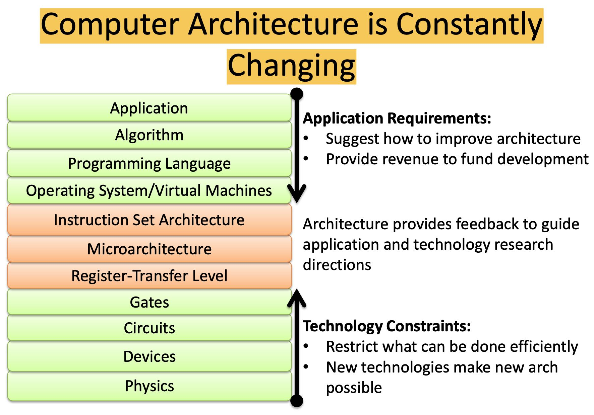
ISA和Microarch之间的差别，对于软件开发者只需要关注到ISA这层就行，而MA层则是由芯片设计者来决定如何高效地实现ISA这层语义。
Architecture vs. Microarchitecture “Architecture”/Instruction Set Architecture:
- Programmer visible state (Memory & Register)
- Operations (Instructions and how they work)
- Execution Semantics (interrupts)
- Input/Output
- Data Types/Sizes
Microarchitecture/Organization:
- Tradeoffs on how to implement ISA for some metric (Speed, Energy, Cost)
- Examples: Pipeline depth, number of pipelines, cache size, silicon area, peak power, execution ordering, bus widths, ALU widths
ISA差异很大的原因有下面这些
Technology Influenced ISA
- Storage is expensive, tight encoding important
- Reduced Instruction Set Computer
- Remove instructions until whole computer fits on die
- Multicore/Manycore – Transistors not turning into sequential performance
Application Influenced ISA
- Instructions for Applications
- DSP instructions
- Compiler Technology has improved
- SPARC Register Windows no longer needed – Compiler can register allocate effectively
顺序处理器的性能变化，RISC出现在1986年，2006年开始放弃在单核上做改进转向多核。
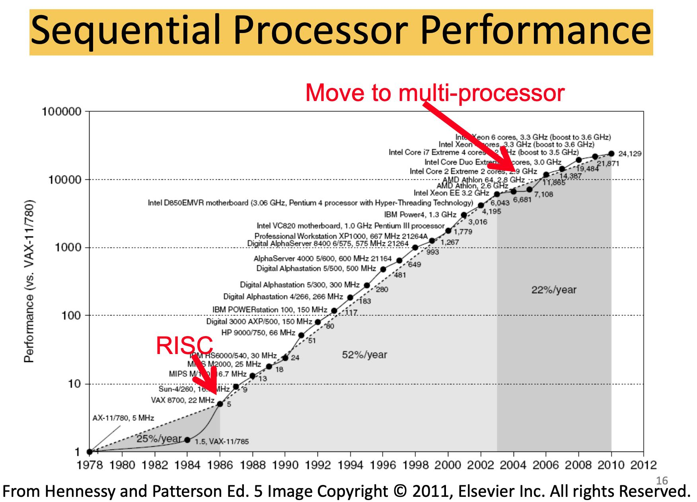
现代处理器需要考虑的事情非常多：指令/数据/线程级别并行，超长流水，内存和缓存技术
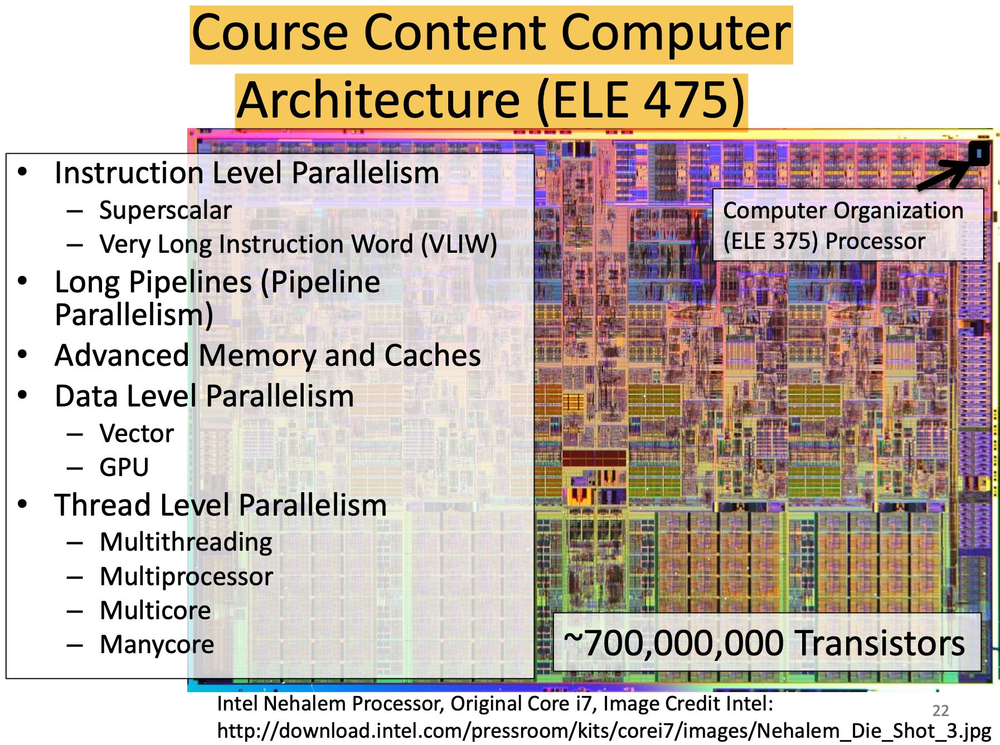
指令中几种阻碍深流水线的因素：
- Structural Hazard: An instruction in the pipeline needs a resource being used by another instruction in the pipeline (使用到相同的运算/控制单元，解决办法如下）
- Schedule: Programmer explicitly avoids scheduling instructions that would create structural hazards 调整指令熟顺序
- Stall: Hardware includes control logic that stalls until earlier instruction is no longer using contended resource 暂停流水
- Duplicate: Add more hardware to design so that each instruction can access independent resources at the same time 冗余的运算/控制单元
- Data Hazard: An instruction depends on a data value produced by an earlier instruction（多条指令之间存在数据依赖，解决办法如下）
- Schedule: Programmer explicitly avoids scheduling instructions that would create data hazards 调整指令顺序
- Stall: Hardware includes control logic that freezes earlier stages until preceding instruction has finished producing data value 暂停流水
- Bypass: Hardware datapath allows values to be sent to an earlier stage before preceding instruction has left the pipeline 调整流水线结构，可以提前得到数据
- Speculate: Guess that there is not a problem, if incorrect kill speculative instruction and restart 推测执行
- Control Hazard: Whether or not an instruction should be executed depends on a control decision made by an earlier instruction（控制结构比jb/jbe/jmp这些，使用分支预测解决）
几种常见/可预测的内存访问模式，可以看到都是满足时间/空间局部性的：获取指令，堆栈访问，向量/标量化数据的访问。
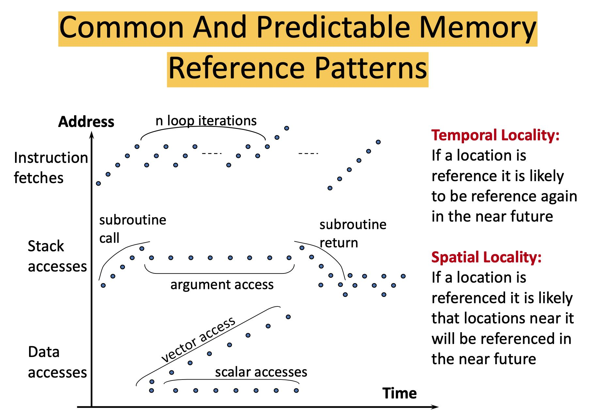
可视化地观察时间/空间局部性
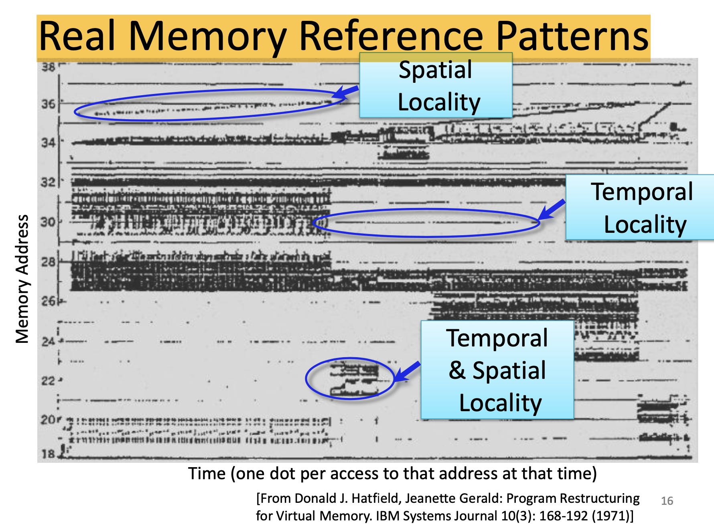
Cache几种Missing分类：3C, Compulsory(第一次访问), Capacity(容量不够造成的淘汰), Conflict(冲突造成的淘汰， 实际上容量是足够的）
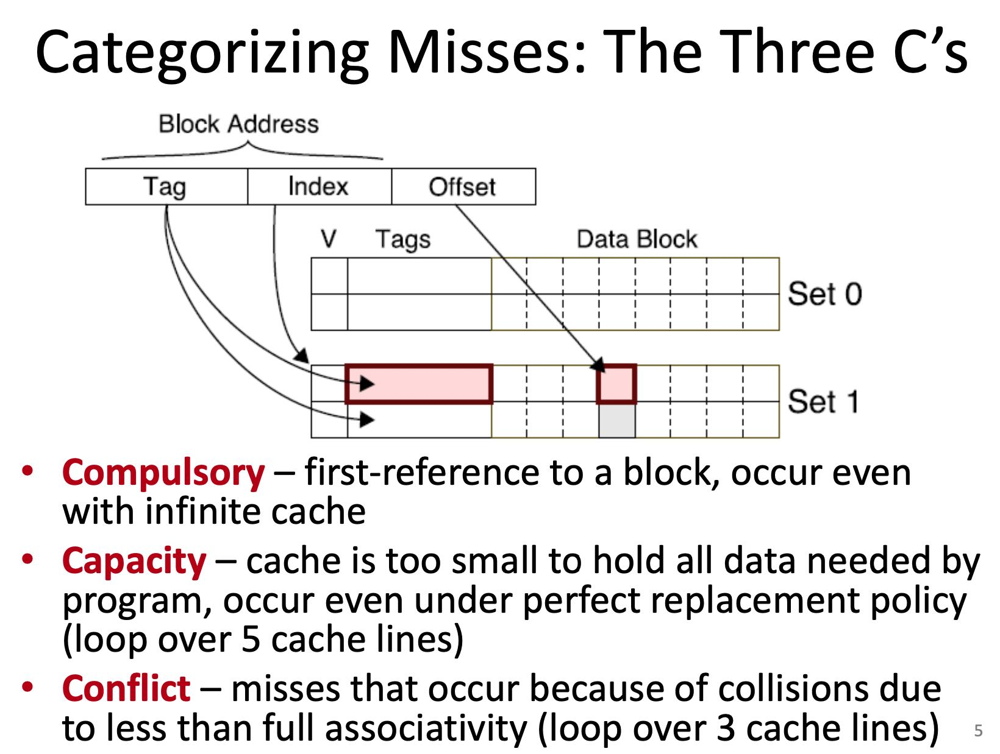
Cache设计上的权衡：N-way, Block Cache, Cache Size. Block Cache在64, N-way上越大越好，Cache Size越大越好。
N-way上, 1-way的访问时间是最短的，但是2/4/8时间其实差别不大很大，但是1-way的miss rate却非常高，所以理论上选择8-way是应该是更好的选择。
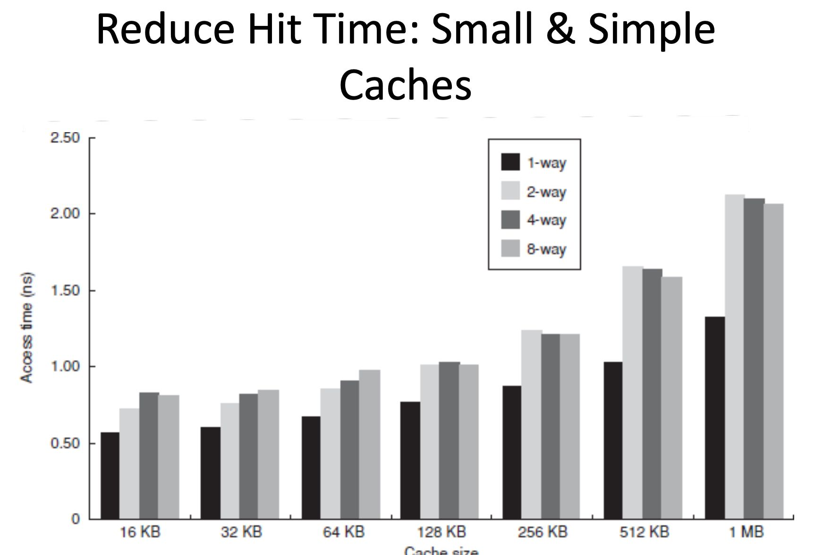
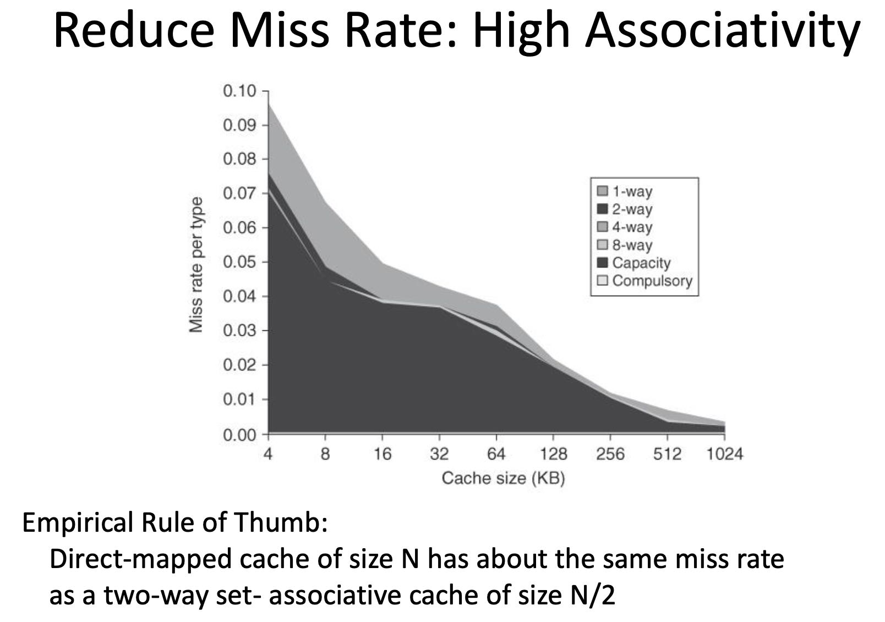
Cache Block Size Pros & Cons: 好处就是一次获取数据更多带宽更大，而坏处就是如果数据没有完全访问的话那么就相当于浪费带宽，而且更大的Block Size会导致更少的cache items, 冲突率更大。从下图可以看到几乎Block Size = 64 是个最优值，不过也不好说是不是软件在优化上就使用了block size = 64这个事实。
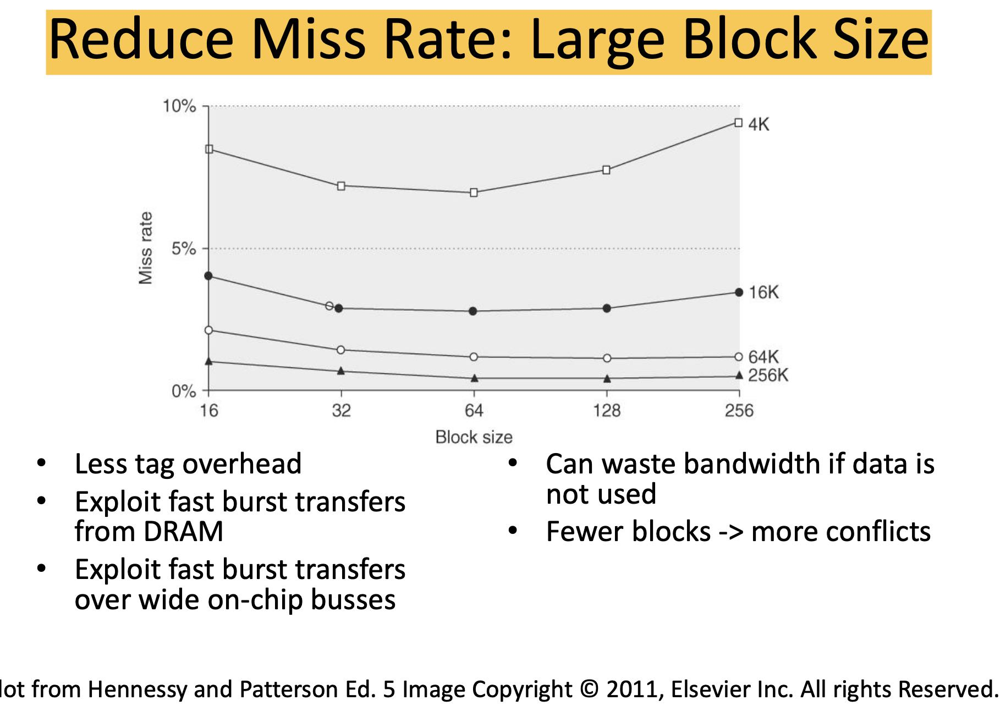
Cache Size有个法则就是：Cache Size翻倍， miss rate降低30%. (1-1/(2^0.5))
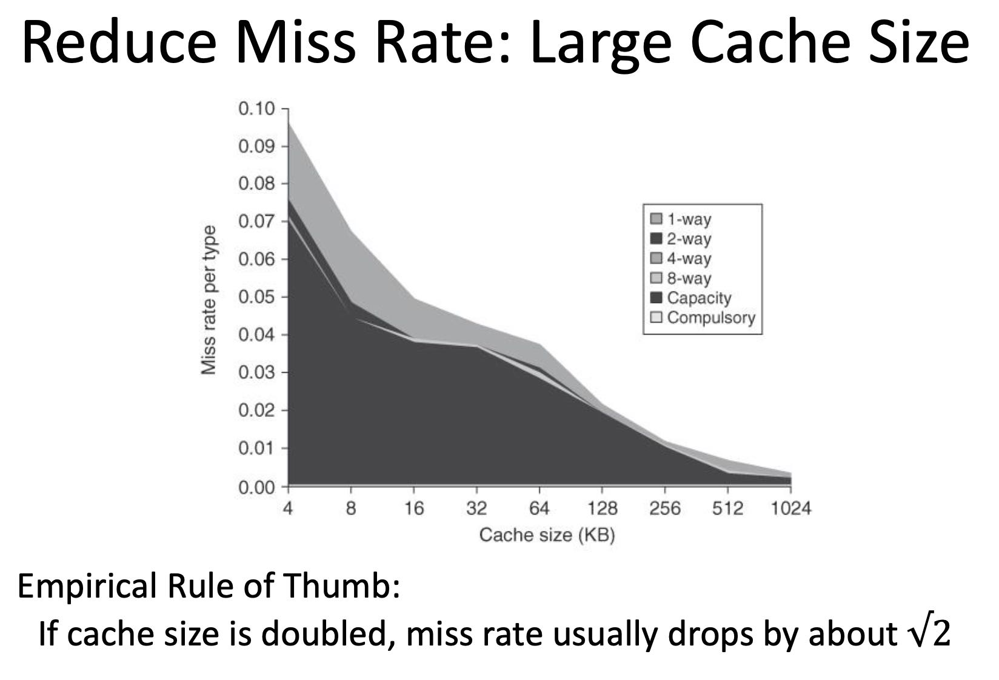
VLIW要求将多条操作打包在一个指令里面，并且操作之间是相互独立的：使用不同的计算/控制单元，不存在数据之间的依赖。从PPT里面来看，每个slot里面还有具体的cycle latency要求，看起来这个对于编译器的要求非常高。
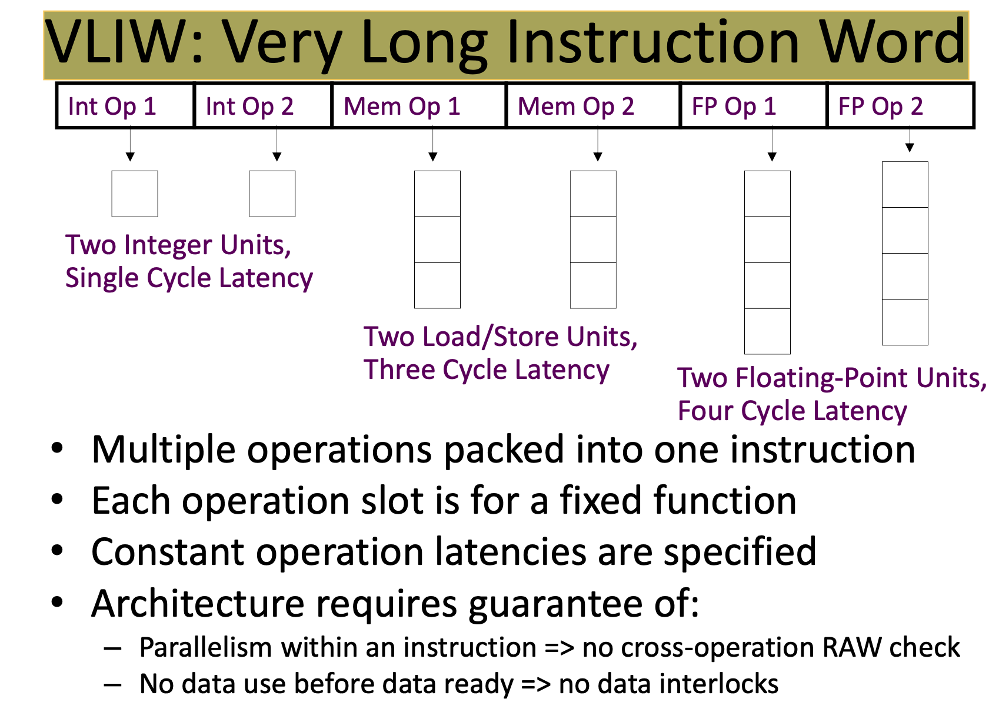
实际上VLIW问题是比较多的（一些点没有看懂）：
VLIW Compiler Responsibilities
- Schedule operations to maximize parallel execution
- Guarantees intra-instruction parallelism
- Schedule to avoid data hazards (no interlocks)
- Typically separates operations with explicit NOPs
Problems with “Classic” VLIW
- Object-code compatibility （二进制兼容性)
- have to recompile all code for every machine, even for two machines in same generation
- Object code size (二进制大小）
- instruction padding wastes instruction memory/cache
- loop unrolling/software pipelining replicates code
- Scheduling variable latency memory operations
- caches and/or memory bank conflicts impose statically unpredictable variability
- Knowing branch probabilities
- Profiling requires an significant extra step in build process
- Scheduling for statically unpredictable branches
- optimal schedule varies with branch path
- Precise Interrupts can be challenging – Does fault in one portion of bundle fault whole bundle? – EQ Model has problem with single step, etc.